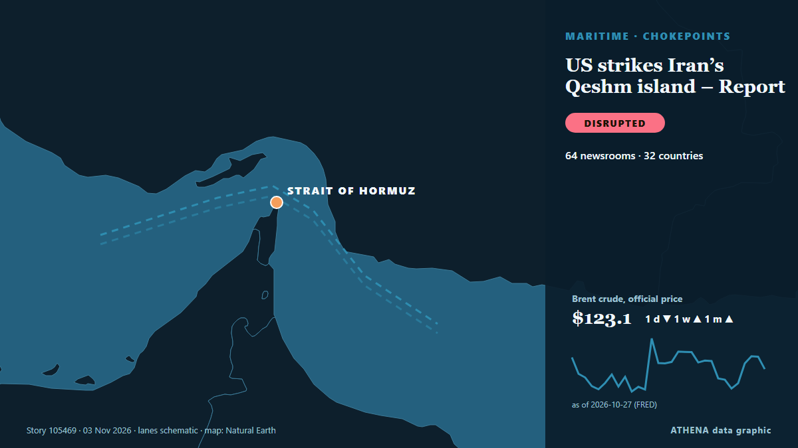

US strikes Iran’s Qeshm island – Report

The US has not publicly announced the attacks, so as not to signal any intention of resuming major combat operations, the Wall Street Journal reported. из CNA (Channel NewsAsia)
Независимые источники: 64 издания в 32 странах, с 2 нояб.; первым сообщил Arab News; освещение продолжает расти. ATHENA оценивает риск как высокий (6.4/10), прежде всего из-за тяжести описываемого ущерба и географического и отраслевого охвата. Уверенность — 87 % (высокая); подтверждают независимые источники: 64 издания, средняя надёжность источников — 75 %. СМИ по странам: Соединенные Штаты (5), Индия (4), Турция (3). Освещение: с 2 нояб. по 3 нояб., 6 ч.
Почему это важно: Ормузский пролив соединяет Персидский залив с открытым океаном. Через него проходит около пятой части потребляемой в мире нефти, поэтому атаки на суда или угрозы его закрытия за часы влияют на цены на энергоносители и стоимость страховки.
Что изменилось: 83 новых сообщений от 64 редакций за 24 часа до 3 нояб..
Первый заголовок: Iran reports explosions near Qeshm Island
Заголовки приводятся на английском языке, как они были опубликованы.
Коротко в цифрах
Отобрано, оценено и написано по опубликованной методологии ATHENA. Ни один редактор не вмешивается в отдельные события. Как это создаётся ›
| 02 Nov 21:15 UTC | 6 |
|---|---|
| 02 Nov 22:15 UTC | 1 |
| 02 Nov 23:15 UTC | 2 |
| 03 Nov 00:15 UTC | 5 |
| 03 Nov 01:15 UTC | 15 |
| 03 Nov 02:15 UTC | 15 |
| 03 Nov 03:15 UTC | 9 |
| 03 Nov 04:15 UTC | 7 |
| 03 Nov 05:15 UTC | 5 |
| 03 Nov 06:15 UTC | 2 |
| 03 Nov 07:15 UTC | 2 |
| 03 Nov 08:15 UTC | 0 |
| 03 Nov 09:15 UTC | 3 |
| 03 Nov 10:15 UTC | 5 |
| 03 Nov 11:15 UTC | 1 |
| 03 Nov 12:15 UTC | 1 |
| 03 Nov 13:15 UTC | 1 |
| 03 Nov 14:15 UTC | 0 |
| 03 Nov 15:15 UTC | 0 |
| 03 Nov 16:15 UTC | 0 |
| 03 Nov 17:15 UTC | 1 |
| 03 Nov 18:15 UTC | 1 |
| 03 Nov 19:15 UTC | 1 |
| 02 Nov 22:06 UTC | 3.4 |
|---|---|
| 03 Nov 01:50 UTC | 5.0 |
| 03 Nov 02:04 UTC | 5.8 |
| 03 Nov 03:11 UTC | 6.8 |
| 03 Nov 06:25 UTC | 5.8 |
| 03 Nov 11:12 UTC | 6.4 |
| 03 Nov 11:59 UTC | 5.1 |
| 03 Nov 12:22 UTC | 6.5 |
| 03 Nov 19:45 UTC | 6.4 |
Откуда эти цифры
Значимость
Риск
Уверенность
Освещение — кто сообщил и когда
заголовок в оригинале · открывает источник- Arab News · Саудовская АравияUS has conducted defensive strikes on some Iranian targets in the Strait of Hormuz, US official says
- Arab Times · КувейтExplosions Heard Off Iran's Bandar Lengeh
- IRNA (English) · ИранIRGC Navy captures third and fourth US drones intact over Qeshm island
- investingLive (ForexLive) · INTUp to six blasts reported near Iran’s Qeshm Island as Israeli TV cites US strike
- Shafaq News (English) · ИракIran reports explosions near Qeshm Island
- Mehr News (English) · ИранExplosions heard on Qeshm Island, Bandar Lengeh
- investingLive (ForexLive) · INTCIA chief Ratcliffe reportedly advises Trump to keep ‘no war, no deal’ pressure on Iran
- Anadolu Agency (English) · ТурцияExplosions heard in southern Iran’s coastal areas: Reports
- NDTV · ИндияUS Strikes Iran's Qeshm Island, Hours Before Midterm Elections
- Middle East Eye · INTBlasts heard in southern Iran
- Anadolu Agency (English) · ТурцияUS carries out 'defensive' strikes on Iran’s Qeshm Island: Report
- Xinhua (English) — page reader · КитайFlash: U.S. strikes Iran's Qeshm island -- media
- The Straits Times · СингапурUS carries out ‘defensive’ strikes on Iran’s Qeshm Island, officials say
- Haaretz (English) · ИзраильReport: U.S. struck Iran's Qeshm Island overnight
- Middle East Eye · INTReport: US launched strikes on Iran
- CNA (Channel NewsAsia) · СингапурUS strikes Iran's Qeshm island: Report
- Times of India · ИндияUS launches 'secret' strikes on Iran’s Qeshm Island as peace talks teeter along
- FXStreet · ИспанияUS strikes Iran’s Qeshm Island near Strait of Hormuz — WSJ
- TRT World · ТурцияUS carries out strikes on Iran's Qeshm Island — report
- The National · ОАЭUS carries out attack on Iran's Qeshm Island
- TASS (English) · РоссияUS strikes Iranian island of Qeshm, WSJ says
- APA (English) · АзербайджанUS struck Iran's Qeshm Island
- New Straits Times · МалайзияOil rises after report of US strike on Iran's Qeshm Island
- Business Recorder · ПакистанUS struck Iran's Qeshm Island, Wall Street Journal reports
- NBC News (World) · Соединенные ШтатыU.S. military carries out limited strikes on Iran’s Qeshm Island
- Livemint · ИндияUS strikes Iran's Qeshm Island, oil prices rise as fears of renewed conflict and disruptions mount
- RFE/RL (English) · INTUS Strikes Iranian Island As Trump Downplays Prospect Of Renewed Conflict
- The Hill · Соединенные ШтатыUS military strikes Iran’s Qeshm Island day before midterms
- Al Jazeera English · КатарExplosions hit Iran’s Qeshm Island as US media report US strikes in Hormuz
- Indian Express · ИндияUS strikes Iran’s Qeshm Island as Trump says deal is coming together
- Free Malaysia Today · МалайзияUS strikes Iran’s Qeshm island
- France 24 English · ФранцияUS strikes Iran's Qeshm Island as Trump signals progress in talks
- ABC News Australia · АвстралияUS has struck Iranian targets in Strait of Hormuz, US official says
- The National · ОАЭIran war latest: Tehran entering last-ditch talks with 'complete pessimism'
- Gulf News · ОАЭUS ‘defensive’ strikes on Iran's Qeshm Island: Latest developments as peace talks continue
- APA (English) · АзербайджанUS military aircraft destroys missile launcher on Qeshm Island
- The Daily Star — page reader · БангладешUS strikes Iran's Qeshm island: Wall Street Journal
- CNBC World · Соединенные ШтатыU.S. strikes Iran’s Qeshm Island as Vance hopes for ‘negotiated settlement’ with Tehran
- CBS News (World) · Соединенные ШтатыU.S. launches strikes on Iranian targets in Strait of Hormuz
- PBS NewsHour · Соединенные ШтатыU.S. strikes Iranian targets in Strait of Hormuz, U.S. official tells AP